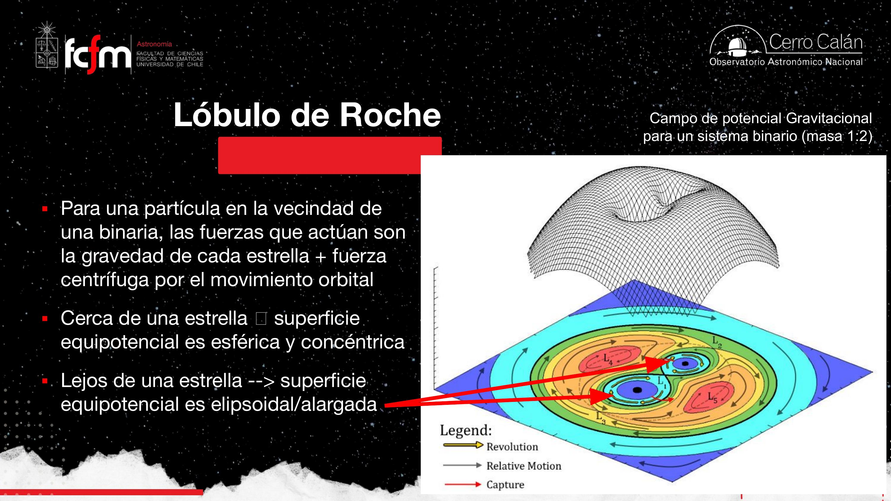
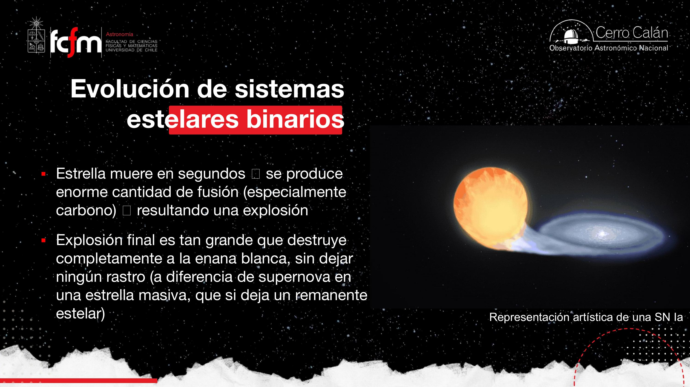

El cementerio estelar
Qué queda cuando una estrella deja de fusionar: enanas blancas sostenidas por materia degenerada, la relación masa–radio al revés de la intuición, el límite de Chandrasekhar, binarias con lóbulos de Roche, novas recurrentes y supernovas tipo Ia como candelas estándar del universo lejano.
Las clases anteriores del módulo siguieron la evolución de estrellas de baja y alta masa hasta su muerte. Esta clase responde la pregunta complementaria: ¿qué objetos quedan? El universo acumula un extravagante cementerio estelar — enanas blancas, estrellas de neutrones, agujeros negros, nebulosas planetarias — cuya variedad depende casi por completo de la masa inicial. Hoy nos concentramos en el remanente más común de estrellas como el Sol: la enana blanca, y en cómo las binarias pueden reavivarla en novas o destruirla en supernovas tipo Ia.
Remanentes estelares
Lo que sobrevive cuando se apaga la fusión termonuclear.
Un remanente estelar es lo que queda de una estrella cuando ya no puede generar energía fusionando elementos livianos en otros más pesados. La masa inicial determina el destino final:
- ≲ 8 M☉ (estrellas de baja/intermedia masa): nebulosa planetaria + enana blanca.
- ≳ 8 M☉ (alta masa): explosión como supernova tipo II (u otras) + estrella de neutrones o agujero negro (clases 4–5).
Los púlsares son estrellas de neutrones vistas de cierta orientación; no todas las estrellas de neutrones son púlsares. Los magnetars son un subtipo con campos magnéticos extremos.

Hasta el final de la vida estelar, la masa es el parámetro dominante. No es lo mismo comparar dos enanas blancas distintas (cada una nació con cierta masa) que imaginar una enana blanca «engordando» en solitario: una enana blanca aislada solo se enfría; la que gana masa lo hace en binarias, como veremos.
Enana blanca: el núcleo desnudo
C/O, sin fusión, tamaño terrestre, masa solar.
La enana blanca es el núcleo expuesto de una estrella de baja masa tras expulsar sus capas en una nebulosa planetaria. Ya no hay reacciones termonucleares: es un remanente inerte que solo enfría liberando el calor residual de toda su vida previa.
Composición y escala
- Núcleo de carbono y, en menor medida, oxígeno (producto de la evolución de estrellas como el Sol).
- Masa típica ; radio (del orden del tamaño de la Tierra).
- Densidad (≈ un millón de gramos por centímetro cúbico).

Trayectoria en el diagrama HR
Al final de la evolución de una estrella tipo Sol ocurre una secuencia contraintuitiva en el HR:
- (A) Pérdida de masa y colapso del núcleo; el núcleo caliente queda expuesto dentro de la nebulosa planetaria.
- (B) La temperatura efectiva sube (nos movemos hacia la izquierda en el HR) sin que la estrella se esté calentando: desaparecen las capas externas frías y empezamos a ver directamente el núcleo caliente.
- (C) La luminosidad baja porque emitimos desde un área mucho más pequeña; luego el track de enfriamiento desciende lentamente durante miles de millones de años.

Si una enana blanca terminara de enfriar y dejara de emitir luz detectable, sería una enana negra. El tiempo de enfriamiento es tan largo que probablemente ninguna ha terminado en la edad del universo. Se han buscado como candidatos a materia oscura (proyecto MACHOs: Massive Compact Halo Objects), sin éxito concluyente. Detección teórica: microlentes gravitacionales.
¿Por qué no colapsa? Presión degenerada
Sin fusión, la gravedad gana… salvo que entra la mecánica cuántica.
En una estrella de secuencia principal la presión de radiación y la presión térmica del gas equilibran la gravedad gracias a la energía de fusión. En una enana blanca no hay fusión. ¿Qué la sostiene?

La materia está tan comprimida que los electrones ocupan estados cuánticos y la presión degenerada resiste la compresión. Dos ideas clave de la clase:
- Principio de exclusión de Pauli: dos fermiones idénticos no pueden ocupar el mismo estado cuántico (analogía del estacionamiento lleno en Navidad).
- Principio de incertidumbre de Heisenberg: al confinar las partículas (menor Δx), aumenta la incertidumbre en el momento (Δp) y con ello la presión.
En un gas ideal, subir la temperatura aumenta la presión. En materia degenerada, la presión crece con la densidad, no con la temperatura. Para sostener una enana blanca solo con presión térmica haría falta del orden de 10⁹ K — muchísimo más que la temperatura del núcleo progenitor. Los electrones «se aprietan» y empujan hacia afuera por pura estadística cuántica.
Piensa en un gas ideal como un resorte térmico (más calor ⇒ más presión). La materia degenerada es un resorte geométrico: cuanto más la comprimes, más dura se pone, independiente del «termostato». Es un régimen de ecuación de estado distinto — como cambiar de modelo constitutivo en un simulador de materiales.
Relación masa–radio y límite de Chandrasekhar
Más masa ⇒ enana más pequeña. Hasta 1,4 M☉.
Comparando enanas blancas de distintas masas (no una misma estrella ganando masa), ocurre algo antiintuitivo:
- Más masa ⇒ mayor gravedad ⇒ los electrones deben apretarse más para generar más presión degenerada.
- Al apretarse, baja el radio: una enana blanca de 1,2 M☉ es más pequeña que una de 0,4 M☉.

Sirio B: medir lo «exótico»
Binarias + leyes de Kepler = báscula cósmica.
Las enanas blancas son diminutas y difíciles de detectar en solitario. La forma más fiable de medir su masa es encontrarlas en sistemas binarios: con las leyes de Kepler y la curva de velocidad radial se determinan las masas de ambas componentes.

Todas las enanas blancas con masa medida en binarias cumplen M < 1,4 M☉. Es una de las verificaciones más limpias del límite de Chandrasekhar en la naturaleza.
Sistemas binarios y lóbulos de Roche
Más de la mitad de las estrellas van acompañadas.
Por estadística, más del 50 % de las estrellas pertenecen a sistemas múltiples (Gaia ha catalogado millones de binarias). Dos estrellas orbitan su centro de masa común; no tienen por qué tener la misma masa, y eso cambia toda la evolución.

Reglas de oro en binarias
- La componente más masiva evoluciona primero (vive menos tiempo en la secuencia principal).
- En binarias cercanas, una gigante roja puede llenar su lóbulo de Roche y transferir masa a la compañera.
- El intercambio forma a menudo un disco de acreción y espirales de gas (conservación del momento angular).


Una binaria en transferencia de masa es un problema de acoplamiento gravitatorio + conservación de momento angular + disipación por fricción en el disco. Si una estrella pierde masa, las órbitas se reajustan; el disco disipa energía y puede acercar las componentes. Es ingeniería de sistemas con pérdidas — solo que a escala estelar.
Novas vs. supernovas tipo Ia
Misma cocina binaria, distinto desenlace.
Novas: fusión superficial en un «cascarón»
Cuando hidrógeno de la gigante compañera cae sobre la enana blanca (rica en C/O), se forma una capa de H en la superficie. Si la temperatura y presión son suficientes, hay fusión termonuclear local y rápida del H → He. No es un «pum» que destruye la estrella: es un encendido que puede repetirse mientras siga cayendo material.

- Luminosidad sube típicamente ×100–×1000 durante semanas o meses.
- La enana blanca sobrevive; el fenómeno es superficial.
- Pueden ser recurrentes (p. ej. RS Oph, T CrB en Corona Austral).
Supernova tipo Ia: destrucción total
Si la enana blanca acumula material tan rápido (o en cantidad suficiente) que supera 1,4 M☉, la presión degenerada de electrones ya no alcanza. El núcleo de carbono colapsa y se enciende la fusión explosiva de todo el objeto. La enana blanca se destruye por completo — no queda estrella de neutrones ni agujero negro central.


Las SN Ia muestran líneas de silicio (formado al fusionar C/O en la explosión) y poco hidrógeno — coherente con una enana blanca de núcleo C/O, no con una estrella masiva envuelta en H. Las SN tipo II (clase anterior) sí tienen mucho H.
Candelas estándar y el universo lejano
Todas las SN Ia «leen igual» porque todas nacen igual.
Como todas las supernovas tipo Ia provienen de enanas blancas que alcanzan ≈ 1,4 M☉, sus curvas de luz son muy similares. Son candelas estándar: fuentes de luminosidad conocida que permiten medir distancias extragalácticas comparando el brillo observado con el esperado.
- La luminosidad de una SN Ia puede superar la de toda su galaxia huésped.
- Equipos liderados por José Maza y Adam Riess (entre otros) usaron este método para demostrar que la expansión del universo se acelera (Nobel 2011).
- La explosión también enriquece el medio interestelar con elementos más pesados que el carbono (fusión explosiva del C/O).

No todas las binarias siguen el mismo guion: masas, separación, campos magnéticos y momento de acreción cambian si hay novas, SN Ia u otros fenómenos exóticos. La diapositiva final de la clase es un mapa de posibilidades — un «zoológico» de evolución binaria.

Adelanto: estrellas de neutrones (clases 4–5)
El siguiente escalón de compactación.
Cuando la masa supera lo que los electrones degenerados pueden sostener (y no explota como SN Ia en binaria), el colapso continúa. En estrellas masivas la supernova tipo II deja un remanente de estrella de neutrones o agujero negro.
- Densidad ~10¹⁴ g/cm³ (órdenes de magnitud por encima de una enana blanca).
- Sostenidas por presión degenerada de neutrones (y repulsión nuclear fuerte).
- Púlsares: haz de radio que barre la Tierra si la estrella de neutrones rota y está orientada como un faro.
- Magnetars: subtipo con campos magnéticos extremos.
Las clases 4 y 5 profundizarán en remanentes de alta masa: estrellas de neutrones, púlsares, magnetars y agujeros negros — el otro «panteón» del cementerio estelar.
Conceptos clave
Tabla de repaso rápido.
| Concepto | Qué es / valor | Por qué importa |
|---|---|---|
| Remanente estelar | Objeto sin fusión tras la muerte estelar | Destino depende de la masa inicial |
| Enana blanca | Núcleo C/O expuesto; ~0,01 R☉; ~10⁶ g/cm³ | Remanente típico de estrellas como el Sol |
| Presión degenerada | ; no depende de T | Evita el colapso sin fusión |
| Masa–radio | Más M ⇒ menor R (comparando distintas EB) | Efecto contraintuitivo de materia degenerada |
| Chandrasekhar | Máxima masa de enana blanca estable | |
| Sirio B | EB en binaria con Sirio A | Ejemplo clásico; más visible en rayos X |
| Lóbulo de Roche | Región de captura gravitatoria en binaria | Permite transferencia de masa vía L₁ |
| Nova | Fusión de H superficial; ×10²–10³ en L | EB intacta; puede repetirse |
| SN tipo Ia | Explosión termonuclear de EB a ~1,4 M☉ | Destruye el remanente; ~10⁷× más luminosa que nova |
| Candelas estándar | SN Ia con luminosidad casi uniforme | Distancias extragalácticas; expansión acelerada |
| Enana negra | EB totalmente enfriada (hipotética) | Tiempo de enfriamiento > edad del universo |
| Estrella de neutrones | Remanente de alta masa (clases 4–5) | Siguiente nivel de compactación |
Exámenes de práctica
10 exámenes de 5 preguntas (3 de alternativas autocorregibles + 2 de respuesta escrita).